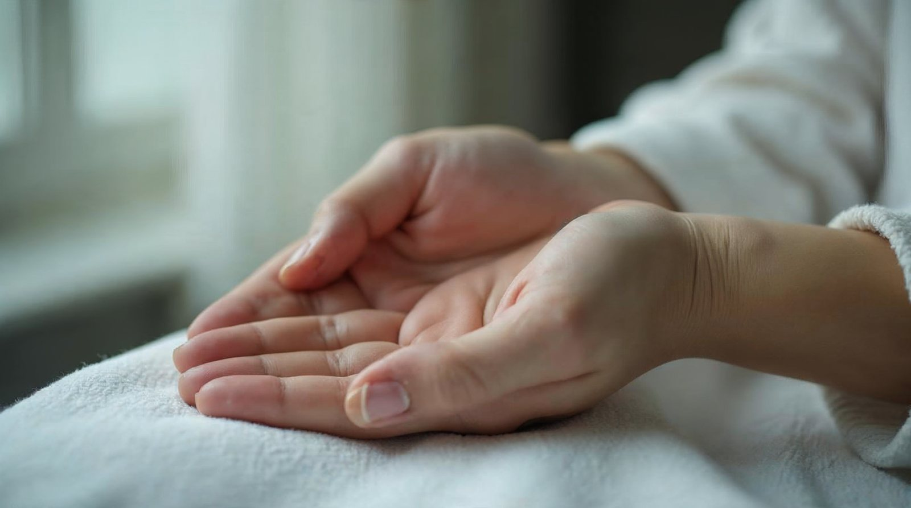
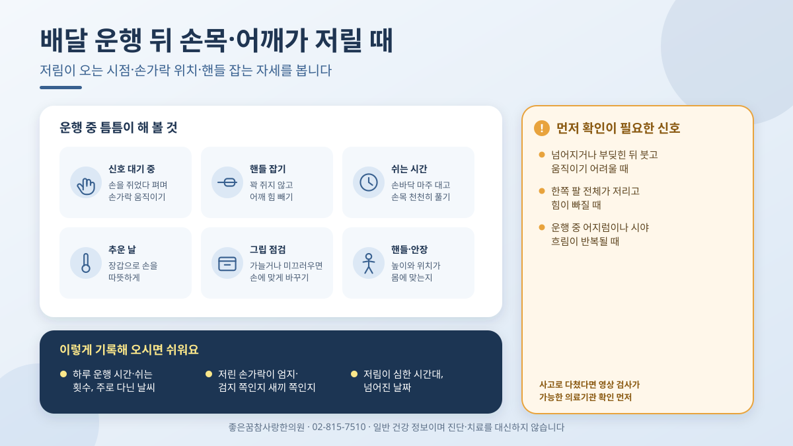

이종호 한의사 감수좋은꿈참사랑한의원 대표원장 (한의사 면허번호 19769)발행 2026-11-23 · 수정 2026-11-26
이 글의 차례
신호를 기다렸다가 출발하기를 하루 수십 번 반복하다 보면 손목이 시큰하고 어깨가 뭉치는 날이 이어집니다. 추운 날에는 손이 곱아 핸들을 더 세게 쥐게 되고, 퇴근 뒤 손가락이 저려 잠을 설치기도 합니다. 저림의 위치와 시점을 먼저 확인하면 무엇부터 바꿀지 정하기 쉬워집니다.
왜 이런 불편이 생길 수 있나요
- 핸들을 세게 쥐면 손목을 굽히는 힘줄과 손바닥 쪽 신경이 지나는 길에 압력이 오래 걸릴 수 있습니다.
- 엔진과 노면에서 오는 진동이 손과 팔에 계속 전해지면 손이 저리고 차갑게 느껴지는 경우가 있습니다.
- 헬멧을 쓴 채 고개를 들고 앞을 오래 보면 목과 어깨 근육이 쉬지 못합니다.
- 자전거는 손바닥 바깥쪽에 체중이 실리기 쉬워, 새끼손가락 쪽이 저린 경우도 있습니다.
- 끼니를 거르고 쉬는 시간이 짧으면 몸이 회복할 틈이 줄어 피로가 쌓이기 쉽습니다.
먼저 이렇게 여쭙니다
- 저림이나 시큰거림이 언제 시작되나요? 탈 때인지, 쉬고 나서인지요.
- 손가락 중 어느 쪽이 저린가요?
- 핸들 높이나 안장 위치를 몸에 맞게 조절해 두셨나요?
- 하루 운행 시간과 쉬는 횟수는 어느 정도인가요?
- 장갑이나 보호 장비는 어떻게 쓰시나요?
일상에서 먼저 해 볼 수 있는 것
신호 대기 중 10~20초(완전히 멈춰 발을 디딘 뒤에만)
- 한 손씩 손가락을 쫙 폈다 쥐기를 5번 하며 손목과 손가락을 가볍게 움직입니다.
- 핸들을 필요 이상으로 꽉 쥐지 않았는지 확인하고, 어깨를 한 번 올렸다 툭 내려 힘을 뺍니다.
픽업 대기·배달 사이 1~2분
- 헬멧을 벗고 턱을 뒤로 살짝 당겨 5초 버티기를 5번 합니다.
- 팔을 앞으로 뻗어 손바닥이 위를 보게 하고, 다른 손으로 손가락을 몸 쪽으로 15초 당깁니다. 손등이 위를 보게 바꿔 15초 더 합니다.
- 손바닥을 가슴 앞에서 마주 대고 손목을 천천히 아래로 내려 10초 머뭅니다.
식사·쉬는 시간 10분
- 끼니를 거르지 말고 따뜻한 곳에서 손을 녹인 뒤 먹습니다.
- 목을 좌우로 천천히 기울여 15초씩 머물고, 어깨를 뒤로 크게 5번 돌립니다.
퇴근 뒤 10분
- 미지근한 물에 손목까지 담그고 손을 쥐었다 펴기를 20번 합니다.
- 문틀에 팔꿈치를 어깨 높이로 대고 가슴 앞쪽을 20초씩 늘려, 핸들 쪽으로 말린 어깨를 펴 줍니다.
장비 점검
- 핸들과 미러 위치를 팔꿈치가 살짝 굽는 정도로 맞추고, 손목이 위아래로 꺾이지 않게 잡습니다.
- 추운 날에는 장갑이나 핸들 토시로 손을 따뜻하게 유지합니다.
- 그립이 너무 가늘거나 미끄럽다면 손에 맞는 그립으로 바꿉니다.
상황별 예시
- 예를 들어 저녁 시간대에 몰아서 일하는 배달 기사가 자정 무렵 엄지·검지 쪽이 저려 잠을 설친다면, 저림이 시작되는 운행 시간과 쉬는 횟수를 일주일 적어 보고 그립을 쥐는 힘과 손목 각도부터 살핍니다.
- 예를 들어 자전거로 배달하는 대학생이 언덕길이 많은 날 새끼손가락 쪽이 저리다면, 손바닥 바깥쪽에 체중이 실리는지 확인하고 잡는 위치를 자주 바꿔 봅니다.
- 예를 들어 낮에는 사무실에서 일하고 저녁에만 배달하는 직장인이 목과 어깨가 같이 굳는다면, 낮의 모니터 자세와 헬멧을 쓴 시간을 함께 따져 봅니다.

스스로 점검해 보세요
- 운행 1~2시간 안에 손가락이 저리거나 손목이 시큰해진다.
- 신호 대기 중에도 핸들을 꽉 쥐고 있다.
- 쉬지 않고 3시간 넘게 이어 타는 날이 많다.
- 밤에 손이 저려 깨거나 아침에 손이 뻣뻣하다.
- 헬멧을 벗은 뒤에도 목과 어깨가 굳어 고개 돌리기가 불편하다.
- 손이 시린 채로 오래 타는 날이 많다.
- 끼니를 거르고 일하는 날이 일주일에 세 번 이상이다.
한의원에서 함께 살필 수 있는 경우
- 운행 뒤 손목과 손가락이 시큰하고 쥐기 불편한 경우 일하는 동작과 근육의 긴장을 함께 살핍니다.
- 어깨와 목이 굳어 고개 돌리기가 힘든 경우 자세와 쉬는 간격을 함께 살핍니다.
- 쉬는 날에도 손 저림이 이어져 잠을 설치는 경우 생활 리듬을 함께 살핍니다.
좋은꿈참사랑한의원에서는 첫 방문 때 오토바이인지 자전거인지, 하루 운행 시간과 저림이 오는 손가락·시점을 먼저 자세히 듣습니다. 이어서 맥부터 짚고 혀와 배를 살펴 잠과 끼니, 피로가 쌓인 정도를 함께 봅니다.
필요하다고 판단될 때 손목과 목을 움직이며 저림이 어디서 다시 나타나는지 확인하고, 손목 쪽이 의심되면 초음파로 힘줄과 신경이 지나는 길을 살핀 뒤 침·약침·추나 등을 상태에 맞춰 정합니다. 다시 오시면 지난 이야기를 이어서 저림이 시작되는 운행 시간이 어떻게 달라졌는지부터 여쭙습니다. 평일은 저녁 8시까지 진료해 운행을 마친 뒤 들르기도 합니다.
얼마나 지켜보고 언제 상담할까요
- 쉬는 간격과 그립 쥐는 힘, 장비를 바꾼 뒤 1~2주 동안 저림이 시작되는 운행 시간을 적어 봅니다. 저림이 늦게 오거나 짧아지면 그 방법을 이어 갑니다.
- 2~3주가 지나도 저림이 그대로이거나, 쉬는 날에도 저림이 남아 있다면 상담을 받아 보세요.
- 밤에 손이 저려 깨는 일이 일주일 넘게 이어지거나 단추 잠그기처럼 손끝 동작이 서툴러졌다면 미루지 말고 확인합니다.
- 넘어지거나 부딪힌 뒤라면 지켜보지 말고 먼저 진료를 받습니다.
이렇게 기록해 오시면 상담이 쉬워집니다
- 하루 운행 시간과 쉬는 횟수, 주로 다닌 날씨
- 저린 손가락이 엄지·검지 쪽인지 새끼손가락 쪽인지
- 저림이 심해지는 시간대(운행 중·밤·아침)
- 넘어지거나 부딪힌 일이 있었다면 그 날짜
이런 증상은 먼저 확인이 필요합니다
- 넘어지거나 부딪힌 뒤 손목이나 어깨가 붓거나 움직이기 어려운 경우
- 넘어지거나 부딪히며 머리를 다친 뒤 의식이 흐리거나 심한 두통·구토가 있는 경우
이런 신호가 있으면 한의원보다 가까운 병원이나 응급실을 먼저 찾으세요.
관련 글
- 배달 오토바이를 오래 타서 허리가 뻐근하고 손목·손이 저릴 때는 어떻게 살피나요?
- 밤에 손이 저려 깰 때 손목 초음파로 무엇을 확인하나요?
- 배달 일을 하다 사고가 난 뒤 다시 오토바이를 타기 전에 무엇을 확인하나요?

여쭙는 것
- 저림이나 시큰거림이 언제 시작되나요? 탈 때인지, 쉬고 나서인지요.
- 손가락 중 어느 쪽이 저린가요?
- 핸들 높이나 안장 위치를 몸에 맞게 조절해 두셨나요?
생활에서 해 볼 것
- 한 손씩 손가락을 쫙 폈다 쥐기를 5번 하며 손목과 손가락을 가볍게 움직입니다.
- 핸들을 필요 이상으로 꽉 쥐지 않았는지 확인하고, 어깨를 한 번 올렸다 툭 내려 힘…
- 헬멧을 벗고 턱을 뒤로 살짝 당겨 5초 버티기를 5번 합니다.
한의원에서 함께 살필 것
- 운행 뒤 손목과 손가락이 시큰하고 쥐기 불편한 경우 일하는 동작과 근육의 긴장을 함…
- 어깨와 목이 굳어 고개 돌리기가 힘든 경우 자세와 쉬는 간격을 함께 살핍니다.
- 쉬는 날에도 손 저림이 이어져 잠을 설치는 경우 생활 리듬을 함께 살핍니다.
먼저 확인이 필요한 신호
- 넘어지거나 부딪힌 뒤 손목이나 어깨가 붓거나 움직이기 어려운 경우
- 넘어지거나 부딪히며 머리를 다친 뒤 의식이 흐리거나 심한 두통·구토가 있는 경우
한눈에 보는 표
| 구분 | 핵심 |
|---|---|
| 여쭙는 것 | 저림이나 시큰거림이 언제 시작되나요? 탈 때인지, 쉬고 나서인지요. 손가락 중 어느 쪽이 저린가요? |
| 생활에서 해 볼 것 | 한 손씩 손가락을 쫙 폈다 쥐기를 5번 하며 손목과 손가락을 가볍게 움직입니다. 핸들을 필요 이상으로 꽉 쥐지 않았는지 확인하고, 어깨를 한 번 올렸다 툭 내려 힘을 뺍니다. |
| 한의원에서 함께 살필 것 | 운행 뒤 손목과 손가락이 시큰하고 쥐기 불편한 경우 일하는 동작과 근육의 긴장을 함께 살핍니다. 어깨와 목이 굳어 고개 돌리기가 힘든 경우 자세와 쉬는 간격을 함께 살핍니다. |
| 먼저 확인이 필요한 신호 | 넘어지거나 부딪힌 뒤 손목이나 어깨가 붓거나 움직이기 어려운 경우 넘어지거나 부딪히며 머리를 다친 뒤 의식이 흐리거나 심한 두통·구토가 있는 경우 |
자주 묻는 질문
장갑을 두껍게 끼면 도움이 되나요?
손이 따뜻해지면 긴장이 덜해지는 경우가 있지만, 너무 두꺼워 핸들을 세게 쥐게 되면 오히려 부담이 될 수 있습니다.
저린 손가락 위치가 왜 중요한가요?
엄지·검지 쪽인지 새끼손가락 쪽인지에 따라 눌리는 길이 다를 수 있어, 어디서 부담이 오는지 짐작하는 데 참고가 됩니다.
일을 쉬지 않고 계속해도 되나요?
저림이 점점 심해지거나 힘이 빠진다면 먼저 확인해 보시기를 권합니다. 가벼운 뻐근함은 쉬는 간격을 조절하며 지켜볼 수 있습니다.
손목 보호대를 차고 타도 되나요?
손목이 과하게 꺾이지 않게 잡아 주는 데 도움이 될 수 있지만, 너무 조이면 저림이 더할 수 있습니다. 보호대를 찬 날과 차지 않은 날의 저림을 비교해 보세요.
일하다 다쳤을 때 보험 처리나 진료 접수는 어떻게 하나요?
보험이나 산재 해당 여부와 절차는 소속 업체나 관련 기관에 먼저 확인해 보시길 권합니다. 저희 한의원에서 접수가 가능한지와 준비할 것은 방문 전 전화(02-815-7510)로 확인해 주세요.
좋은꿈참사랑한의원은 재진 때 지난번 이야기부터 이어서 여쭙니다. 진료시간과 예약은 오시는 길에서 확인하세요.
어디서 상담받을 수 있나요?
좋은꿈참사랑한의원은 서울 동작구 만양로2길 2 신성빌딩 3층·5층(서울 동작구 상도동, 7호선 상도역 3번 출구 근처)에 있습니다. 한의사 3명(이종호 대표원장, 조영기 수석진료원장, 정원영 진료원장)이 진료합니다. 진료시간은 평일 09:30~20:00(점심 13:00~14:00), 토·일·공휴일 09:30~15:00이며, 방문 전 전화로 확인을 권합니다. 예약은 네이버 예약, 카카오톡 상담, 전화 02-815-7510로 받습니다.
이 글은 일반적인 건강 정보이며 개인의 진단이나 치료를 대신하지 않습니다. 증상이 있거나 복용 중인 약이 있다면 진료를 통해 확인하세요. 치료 효과는 개인마다 다를 수 있습니다.
작성 기준: 일반적으로 알려져 있는 건강 정보를 참고해 정리했습니다(대표원장 감수). 증상 기록은 1~2주 동안 하루 1회, 비슷한 시간에 적어 오시면 지난 상태와 비교하기 쉽습니다.